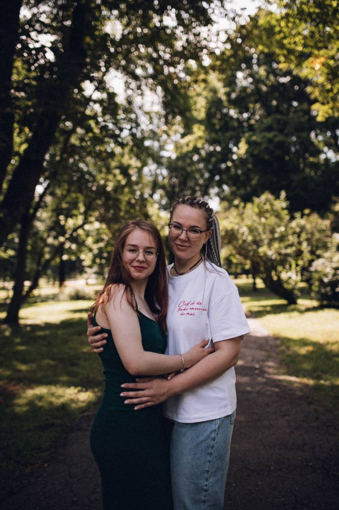

Привіт! Мене звати Поліна, мені 19 років. Я студентка 2-го курсу факультету ФБМІ Київського політехнічного інституту імені Ігоря Сікорського, за спеціальністю – Комп'ютерні науки. Мене завжди цікавила комбінація медицини та технологій, тому я обрала цей напрямок.
Про мене
Моя мета – стати фахівцем у сфері біомедицини з акцентом на ортопедію та відновлення опорно-рухового апарату. Я прагну поєднувати знання з інженерії та науки, щоб створювати інноваційні рішення для покращення життя людей.
Окрім навчання, я активно займаюся дослідженнями та розробкою невеликих проєктів на Python та C++. Також аналізую біомедичні дані та цікавлюсь новітніми технологіями у медицині. У цьому мені допомагає оперуючий лікар-травматолог і моя подруга Красненко Олена Василівна.

У майбутньому я планую працювати над проєктами, які поєднують комп’ютерні науки та медицину, зокрема розробку програмного забезпечення для аналізу біомедичних даних та підтримку пацієнтів у реабілітації.
Я вірю, що поєднання науки, інновацій та практичних навичок допоможе мені створювати цінні рішення для людей та робити світ кращим.